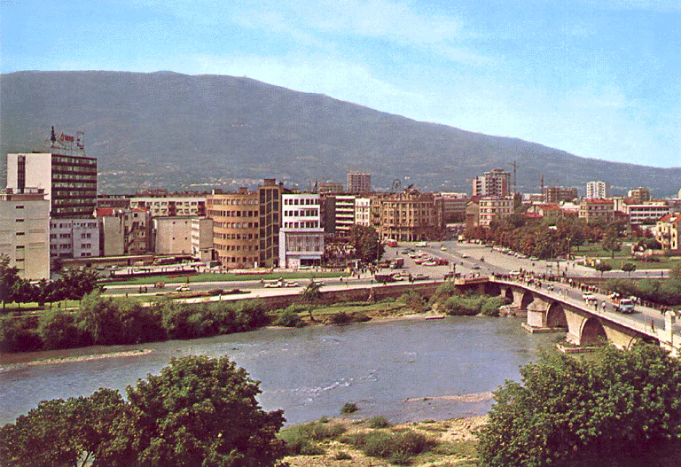
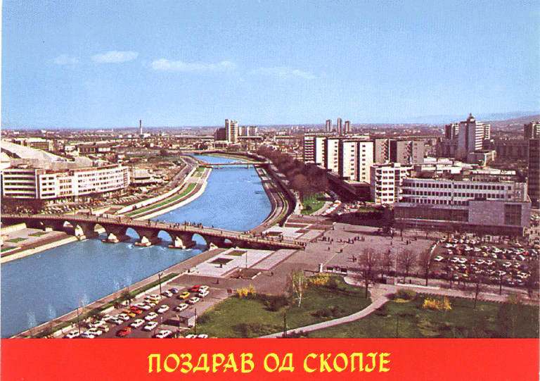
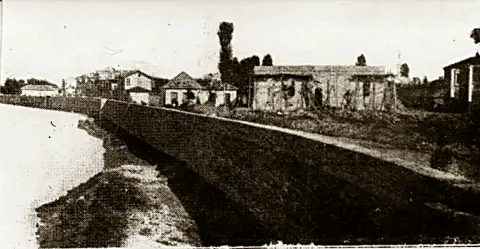

Trg
- Scenarij
- Dimitrie Osmanli, Simon Drakul
- Kamera
- Kiro Bilbilovski
- Godina
- 1964
- Trajanje
- 00:06

Pogled na grad, sa Sahat-kulom desno i Gazi Isa-begovom džamijom lijevo, s mahalom „Sahat-kula“. (1940-ih)

Betonski most kod današnjeg hotela „Grand“. U pozadini se vidi skopska tvrđava - Kale. (1950-ih)

Panorama Skoplja. (1950-ih)

Panorama Skoplja. U prednjem planu je betonski most (kod današnjeg Grand hotela), a u pozadini Kameni most i zgrade: Časnički dom i Narodna banka. Desno gore vidi se skopska tvrđava - Kale. Kej je uređen kao šetalište i prometnica za vozila, s uređenim zelenilom između njih. (1950-ih)

Pogled na betonski most (kod današnjeg Grand hotela). U prednjem planu je Pajko mahala. U pozadini je skopska tvrđava - Kale, a desno od nje Mustafa-pašina džamija. (1950-ih)

Skoplje, 1950-ih, s novim stambenim zgradama. U sredini je prostor današnje Zelene tržnice.

Panorama grada Skoplja. U prednjem planu je Trg slobode. Ulica prema rijeci Vardar je „Vasil Glavinov“. Na prvom uglu trga vidi se ulaz u osnovnu školu „Goce Delčev“. - 1950-ih

Trg „Sloboda“. U pozadini se vide Časnički dom i Narodna banka. - 1950-ih

Središte Skoplja prije potresa - oko 1960. godine.

Panoramska snimka središnjeg gradskog područja Skoplja iz zrakoplova. Trg s Časničkim domom, Narodnom bankom i Gospodarskom trgovačkom komorom. Na desnoj strani je glavna pošta, a lijevo dolje vidi se krov Narodnog kazališta. Fotografija je snimljena 1950-ih.

Panoramska fotografija središnjeg područja Skoplja, - 1950-ih

Snimka središnjeg gradskog područja iz zraka prije potresa - 1963. godina. Između kula (gore desno), gdje je danas trgovački centar, vidi se crkva „Car Konstantin i carica Jelena“.

Panorama dijela stare skopske čaršije, 1950-ih.

Pogled na dio Bit-pazara i staru čaršiju. Iznad njih vidi se Mustafa-pašina džamija. (1950-ih)

Pogled na središte Skoplja. Kameni most još se koristi kao prometnica. Fotografija je snimljena ubrzo nakon katastrofalnog potresa 26. srpnja 1963. godine.

Skoplje 1968. godine. Lokacija današnjeg gradskog trgovačkog centra.

Panoramska fotografija središta grada. Trg se još uvijek koristi kao parkiralište za motorna vozila.
(1960-ih)

Panorama središnjeg dijela grada s regulacijom Vardara, snimljena sa skopske tvrđave - Kale. (1970-ih). U prednjem planu su Kameni most, robna kuća Pelister i druge zgrade.

Pogled sa skopske tvrđave - Kale prema središtu grada Skoplja. Šetalište na desnoj obali Vardara puno je ljudi. (1970-ih)

Pogled sa skopske tvrđave - Kale prema središtu grada Skoplja. (1970-ih)

Pogled na lijevu obalu Vardara, odmah uz Kameni most. U donjem dijelu fotografije vidi se dio crkve Sv. Dimitrija. (1970-ih)

Pogled na lijevu obalu Vardara, odmah uz Kameni most. U donjem dijelu fotografije vidi se dio crkve Sv. Dimitrija. (1980-ih)

Panorama Skoplja. U prednjem planu je mali park „Žena borac“. U donjem dijelu lijevo vidi se dio zgrade Gradske bolnice i dio zgrade Sobranja. - 1980-ih.

Park „Žena borac“ s Gradskim trgovačkim centrom, sa stambenim i javnim zgradama grada Skoplja. - 1980-ih.

Pogled na bulevar i most „Goce Delčev“ s nadvožnjakom u prednjem planu. U pozadini su Telekomunikacijski centar i dio stambenog kompleksa „Gradski zid“. (1980-ih)

Pogled na središnje gradsko područje. U prednjem planu su dio banaka, most „Revolucija“ i kazalište. U pozadini se vide Betonski most, Kameni most i Telekomunikacijski centar - 1980-ih.

Pogled na središnje gradsko područje s krova današnjeg Zavoda za financije. U daljini se vidi kameni most. Na desnoj strani razglednice vidi se današnje kazalište, a iznad njega nazire se skopska tvrđava - Kale - 1980-ih.

Skoplje krajem 1970-ih. Most kod današnjeg hotela „Grand“. Na lijevoj strani uzdiže se zgrada Makedonske radio-televizije, a desno zgrada današnjeg Zavoda za platni promet.

Panorama Skoplja s padine planine Vodno. U prednjem planu je hotel „Panorama“. (1980-ih)

Panorama Skoplja noću, s padina planine Vodno. (1980-ih)

 Akvadukt4 razglednice
Akvadukt4 razglednice Kale30 razglednica
Kale30 razglednica Mostovi60 razglednica
Mostovi60 razglednica
Kej58 razglednica Trg46 razglednica
Trg46 razglednica Građevine66 razglednica
Građevine66 razglednica Kršćanski hramovi19 razglednica
Kršćanski hramovi19 razglednica Muslimanske građevine33 razglednice
Muslimanske građevine33 razglednice Časnički dom29 razglednica
Časnički dom29 razglednica Kazalište28 razglednica
Kazalište28 razglednica Željeznički kolodvor13 razglednica
Željeznički kolodvor13 razglednica Škole36 razglednica
Škole36 razglednica Parkovi12 razglednica
Parkovi12 razglednica Tržnice18 razglednica
Tržnice18 razglednica Ulice38 razglednica
Ulice38 razglednica Panorama I60 razglednicaPanorama II30 razglednica
Panorama I60 razglednicaPanorama II30 razglednica Kolaži55 razglednica
Kolaži55 razglednica Poplave9 razglednica
Poplave9 razglednica Potres27 razglednica
Potres27 razglednica Skoplje 2000.26 razglednica
Skoplje 2000.26 razglednica